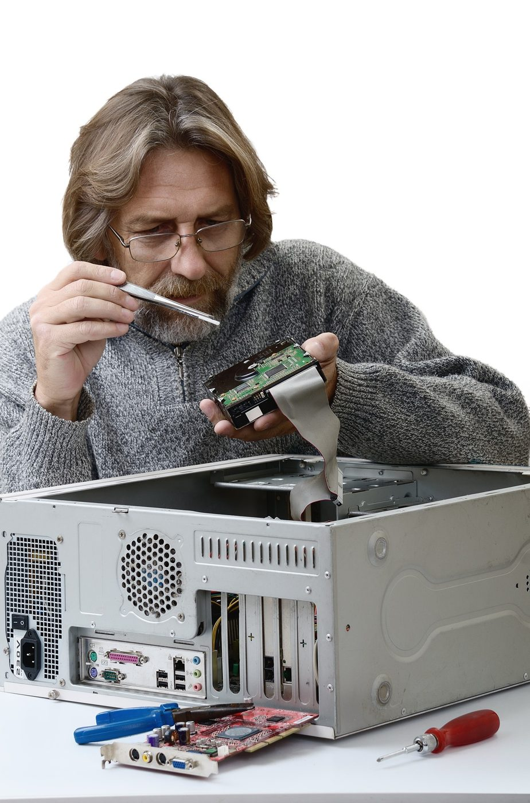

Correctivo
Mantenimiento correctivo
Identifica el síntoma, encuentra la causa probable y aplica la solución.

Síntomas y soluciones
Guía rápida de diagnóstico.
| Síntoma | Causa probable | Solución |
|---|---|---|
| Equipo muy lento | Disco lleno, malware o poca RAM | Liberar espacio, escanear, ampliar RAM o migrar a SSD |
| Sobrecalentamiento | Polvo o pasta térmica seca | Limpiar ventiladores y renovar pasta térmica |
| No enciende | Fuente, cargador o batería | Probar otro cargador/toma; revisar cables y fuente |
| Pantalla azul | Controladores o RAM defectuosa | Actualizar drivers, probar la RAM, restaurar el sistema |
| Sin internet | Driver, router o configuración | Reiniciar router, actualizar adaptador de red |
| Ruidos extraños | Ventilador o disco duro dañado | Respaldar de inmediato y reemplazar el componente |
Proceso de diagnóstico
- Documenta el problemaAnota cuándo ocurre, mensajes de error y cambios recientes.
- Descarta lo simpleCables, tomas de corriente, reinicio y periféricos desconectados.
- Aísla el componentePrueba el hardware por separado y arranca en modo seguro.
- Repara y verificaAplica la solución y comprueba el funcionamiento por unos días.
Acude a un técnico si hay olor a quemado, golpes, líquidos derramados o si el disco hace ruidos con datos importantes.
Fallas de software vs. fallas de hardware
Identificar el origen ahorra tiempo y dinero.
Las fallas de software suelen aparecer de forma progresiva: lentitud, programas que se cierran, mensajes de error o ventanas emergentes. Normalmente se resuelven con actualizaciones, limpieza de malware, reinstalación de programas o restauración del sistema.
Las fallas de hardware tienden a ser más bruscas: el equipo se apaga solo, no da imagen, emite pitidos al arrancar o hace ruidos mecánicos. Requieren revisar componentes físicos como memoria, disco, fuente de poder o ventilación.
¿Reparar o reemplazar?
Criterios para decidir.
- Reparar si el costo es menor al 50 % de un equipo equivalente y el resto de componentes está en buen estado.
- Mejorar (más RAM o un SSD) cuando el equipo es estable pero lento; suele ser la mejora con mejor relación costo-beneficio.
- Reemplazar si el equipo no soporta las versiones actuales del sistema o presenta fallas recurrentes en varias piezas.
Regla de oro: antes de cualquier reparación, respalda tus datos. Si el disco está fallando, evita usarlo más de lo necesario.
Herramientas necesarias
Lo que necesitas para diagnosticar y reparar.

MemTest86Detecta módulos de RAM defectuosos ante pantallas azules.
HWMonitorMuestra temperaturas y voltajes para detectar sobrecalentamiento.
CrystalDiskInfoRevisa si el disco presenta fallas antes de reparar.
Guantes o pulsera antiestáticaProtegen los componentes al abrir el equipo.